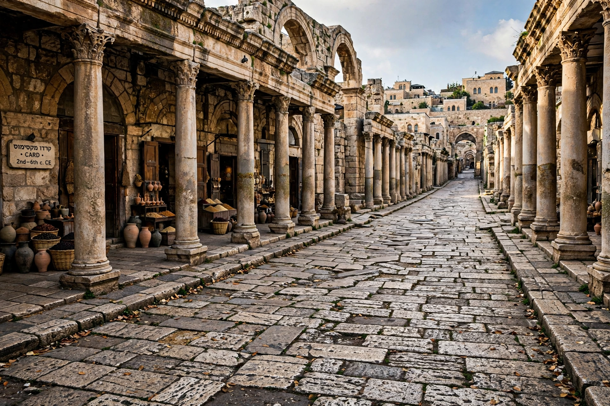

| Aelia Capitolina | |
|---|---|
| Location | Jerusalem |
| Founded | c. 130 AD, by Hadrian |
| Type | Roman colony (colonia) |
| Named for | Hadrian's family (Aelius) and Jupiter Capitolinus |
| Garrison | Legio X Fretensis |

Aelia Capitolina (full name: Colonia Aelia Capitolina) was the Roman colony founded by the emperor Hadrian on the site of Jerusalem around AD 130, following the city's destruction in the First Jewish–Roman War and preceding — and, in the judgment of Cassius Dio and later tradition, helping to provoke — the Bar Kokhba revolt of 132–136. The name combines Hadrian's family name, Aelius, with a dedication to Jupiter Capitolinus, whose temple rose on the site of the destroyed Jewish Temple.
Jerusalem had been razed by Titus in AD 70, and the Tenth Legion Fretensis camped on its ruins. During his eastern tour of 130, Hadrian decided to rebuild the site as a Roman colonia populated by veterans. Whether the foundation predated or followed the outbreak of the revolt is debated; Dio presents it as a cause of the war, while Eusebius places the refoundation after the suppression. After the revolt, the plan was executed in full: a temple to Jupiter Capitolinus (or, some argue, to Hadrian himself) on the Temple Mount, a temple of Venus over the site later identified as the Holy Sepulchre, and formal exclusion of Jews from the city and its territory on pain of death — a ban relaxed only to permit entry on the fast of Tisha B'Av, and later eased in late antiquity.
Aelia was laid out on the standard grid of a Roman colony: a Cardo Maximus running south from the Damascus Gate — whose Roman predecessor stood nearby — and a secondary cardo in the Tyropoeon valley, with a Decumanus running west. Two forums, triumphal arches, baths, a theater, and a nymphaeum served a population of veterans, officials, and merchants. The Madaba Map mosaic of the sixth century depicts the city's colonnaded main street and the Church of the Holy Sepulchre with remarkable clarity. The legionary camp occupied the southwestern hill, in the area of today's Armenian and Jewish Quarters.
Under Constantine and his mother Helena, Aelia was transformed into a Christian holy city, crowned by the Church of the Holy Sepulchre (dedicated 335), and the name "Jerusalem" returned to official use, though "Aelia" persisted in documents and survived in the Arabic name for the city, Iliya. The city passed to the caliphate in 638, its Roman street plan still shaping the Jerusalem of today.